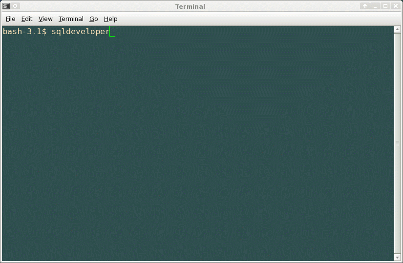
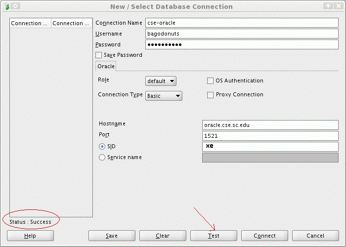

3. To use sqldeveloper, type the command: sqldeveloper

4. Once app appears, click on icon to create new connection:

5. Enter your CSE ORACLE userid:passwd and Oracle server information:

6. Test your connection with inserted parameters:

7. Connect to the CSE Oracle Database server and get to work!: